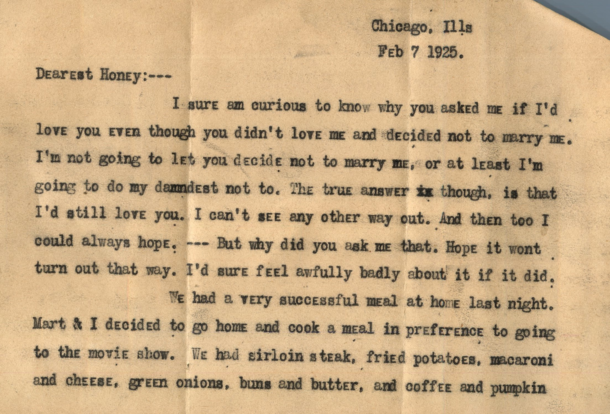

From: Russ F. Souers, To: Lucerne Chandler
Mailed From: Chicago, Illinois on February 7, 1925
Miss Lucerne Chandler
Pearl, Illinois
R.F. Souers
Ass'd Press.
Chicago, Ills.
Chicago, Ills
Feb 7 1925.
Dearest Honey:---
I sure am curious to know why you asked me if I'd love you even though you didn't love me and decided not to marry me. I'm not going to let you decided not to marry me, or at least I'm going to do my damnedest not to. The true answer though, is that I'd still love you. --- But why did you ask me that. Hope it wont turn out that way. I'd sure feel awfully badly about it if it did.
We had a very successful meal at home last night. Mart & I decided to go home and cook a meal in preference to going to the movie show. We had sirloin steak, fried potatoes, macaroni and cheese, green onions, buns and butter, and coffee and pumpkin pie. Sure was a good meal. You should see me wash dishes. I'm getting to be an expert. I had the table all cleared up and washed the dishes in about ten minutes. Freddy wiped 'em. --- I'm practicing so's perhaps, mebbe, I'll wash the dishes for you one in awhile. That's a promise Honey.
The poker game was successful, in a way. I won $22, but loaned out $15 more that I won, so in a way I won, and another way I lost. However, I think its all good. I'll get it sometime. Gosh but I'm tired today, though. That's what I don't like about it. Always feel so tired the next day. Its lots of fun though. The boys crack funny jokes, and we manage to have a pretty good time out of it. Also I'll be able to sleep good tonight.
Guess Mart & I will go McVickers tonight. And get home early and get a good night's sleep. I've got to work tomorrow afternoon. Haven't seen a movie show all week. Ye Gods how I wish you were here to go with me. Honey, again I tell you I miss you like hell.
Did you get the new Motion Picture magazine. Haven't seen the latest issue of the Photoplay, but I'll send it when it comes out. Can you think of any books you'd like to have, or anything else, just let me know, and I'll be tickled to death to get 'em or it for you.
Sure was foggy this owning. The levanted trains went along like snails this morning. All three of us came down to work together and thought sure we'd be late. But we started about fifteen minutes earlier than usual this morning , we wanted to get a heavy breakfast. And the L's were so slow we didn't even have tim e to get a cup of coffee. Just barely managed to get in the office at one minute after nine. It was so foggy you couldn't see ten feet away. Just like old Lunnon.
Guess I'll drop this in the mail box now so's perhaps you'll get it Sunday, if the post office is open.
Wish I was going to see you this evening. Hope you come back soon.
I love you, Honey.
Russ,

 From: Anna Chandler, To: Jeanette Knox Chandler
Mailed From: Jacksonville State Hospital, Ill.
From: Anna Chandler, To: Jeanette Knox Chandler
Mailed From: Jacksonville State Hospital, Ill.


{kind=link}
{kind=link}
{kind=link}
{kind=link}
{kind=link}